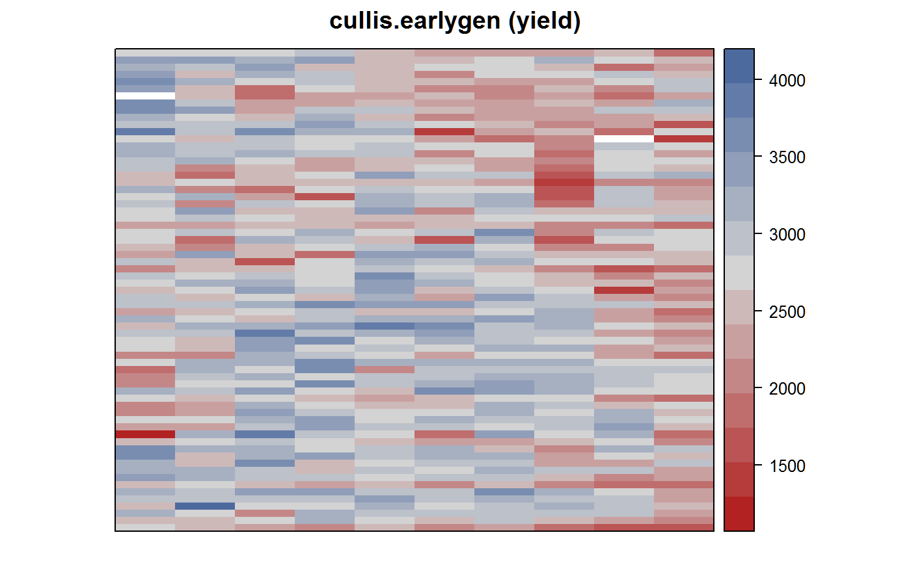
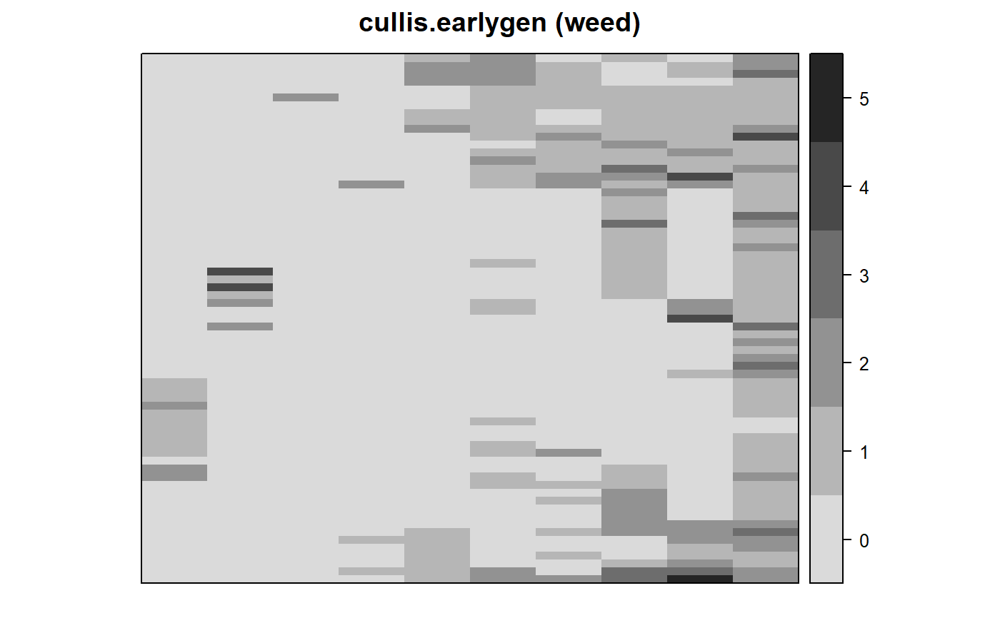
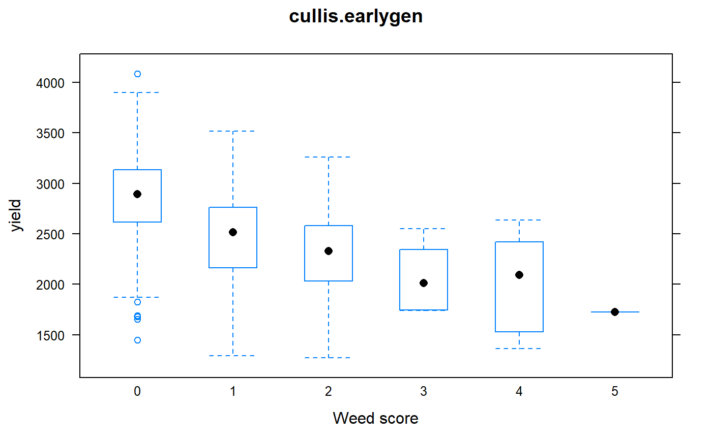

cullis.earlygen.RdEarly generation variety trial in wheat
A data frame with 670 observations on the following 5 variables.
gengenotype factor
rowrow
colcolumn
entryentry (genotype) number
yieldyield of each plot, kg/ha
weedweed score
The data are from an unreplicated field experiment conducted at Tullibigeal, New South Wales, Australia in 1987-88. In each row, every 6th plot was the variety 'Kite'. Six other standard varieties were randomly interspersed over the trial. Each plot was 15m x 1.8m, "oriented with the longest side with rows".
The 'weed' variable is a visual score on a 0 to 10 scale, 0 = no weeds, 10 = 100 percent weeds.
The replicated check variety was numbered 526. A further 6 replicated commercially available varieties (numbered 527 to 532) were also randomly assigned to plots with between 3 to 5 plots of each. The aim of these trials is to identify and retain the top, say 20 percent of lines for further testing. Cullis et al. (1989) presented an analysis of early generation variety trials that included a one-dimensional spatial analysis. Below, a two-dimensional spatial analysis is presented.
Note: The 'row' and 'col' variables are as in the VSN link below (switched compared to the paper by Cullis et al.)
Field width: 10 rows * 15 m = 150 m
Field length: 67 plots * 1.8 m = 121 m
The orientation is not certain, but the alternative orientation would have a field roughly 20m x 1000m, which seems unlikely.
Brian R. Cullis, Warwick J. Lill, John A. Fisher, Barbara J. Read and Alan C. Gleeson (1989). A New Procedure for the Analysis of Early Generation Variety Trials. Journal of the Royal Statistical Society. Series C (Applied Statistics), 38, 361-375. https://doi.org/10.2307/2348066
Unreplicated early generation variety trial in Wheat. https://www.vsni.co.uk/software/asreml/htmlhelp/asreml/xwheat.htm
# \dontrun{ library(agridat) data(cullis.earlygen) dat <- cullis.earlygen # Show field layout of checks. Cullis Table 1. dat$check <- ifelse(dat$entry < 8, dat$entry, NA) libs(desplot) desplot(dat, yield ~ col*row, col="check", cex=0.5, flip=TRUE, aspect=121/150, # true aspect main="cullis.earlygen (yield)")grays <- colorRampPalette(c("white","#252525")) desplot(dat, weed ~ col*row, at=0:6-0.5, col.regions=grays(7)[-1], flip=TRUE, aspect=121/150, # true aspect main="cullis.earlygen (weed)")libs(lattice) bwplot(yield ~ as.character(weed), dat, horizontal=FALSE, xlab="Weed score", main="cullis.earlygen")# Moving Grid libs(mvngGrAd) shape <- list(c(1), c(1), c(1:4), c(1:4)) # sketchGrid(10,10,20,20,shapeCross=shape, layers=1, excludeCenter=TRUE) m0 <- movingGrid(rows=dat$row, columns=dat$col, obs=dat$yield, shapeCross=shape, layers=NULL) dat$mov.avg <- fitted(m0) libs(asreml) # asreml4 # Start with the standard AR1xAR1 analysis dat <- transform(dat, xf=factor(col), yf=factor(row)) dat <- dat[order(dat$xf, dat$yf),] m2 <- asreml(yield ~ weed, data=dat, random= ~gen, resid = ~ ar1(xf):ar1(yf))#> Model fitted using the gamma parameterization. #> ASReml 4.1.0 Mon Jan 11 17:08:12 2021 #> LogLik Sigma2 DF wall cpu #> 1 -4277.990 128496.8 666 17:08:12 0.0 #> 2 -4266.138 120973.9 666 17:08:12 0.0 #> 3 -4253.062 107781.1 666 17:08:12 0.0 #> 4 -4241.333 87649.8 666 17:08:12 0.0 #> 5 -4235.061 79226.3 666 17:08:12 0.0 #> 6 -4233.865 81681.5 666 17:08:12 0.0 #> 7 -4233.681 82608.2 666 17:08:12 0.0 #> 8 -4233.652 82933.6 666 17:08:12 0.0 #> 9 -4233.648 83050.0 666 17:08:12 0.0 #> 10 -4233.647 83094.2 666 17:08:12 0.0#> Model fitted using the gamma parameterization. #> ASReml 4.1.0 Mon Jan 11 17:08:12 2021 #> LogLik Sigma2 DF wall cpu #> 1 -4225.800 82257.80 665 17:08:12 0.0 #> 2 -4225.712 80790.06 665 17:08:12 0.0 #> 3 -4225.633 77826.53 665 17:08:12 0.0 #> 4 -4225.631 77839.46 665 17:08:12 0.0#> Model fitted using the gamma parameterization. #> ASReml 4.1.0 Mon Jan 11 17:08:12 2021 #> LogLik Sigma2 DF wall cpu #> 1 -4224.105 75223.42 665 17:08:12 0.0 #> 2 -4222.648 68685.54 665 17:08:12 0.0 #> 3 -4221.139 61207.50 665 17:08:12 0.0 #> 4 -4220.317 55446.36 665 17:08:12 0.0 #> 5 -4220.264 54939.35 665 17:08:12 0.0 #> 6 -4220.261 54773.48 665 17:08:12 0.0#> effect component std.error z.ratio bound %ch #> gen 73850 10410 7.1 P 0 #> units 30450 8064 3.8 P 0.4 #> xf:yf!R 54770 10630 5.2 P 0 #> xf:yf!xf!cor 0.38 0.115 3.3 U 0 #> xf:yf!yf!cor 0.84 0.045 19 U 0.1## effect component std.error z.ratio bound ## gen 73780 10420 7.1 P 0 ## units 30440 8073 3.8 P 0.1 ## xf:yf(R) 54730 10630 5.1 P 0 ## xf:yf!xf!cor 0.38 0.115 3.3 U 0 ## xf:yf!yf!cor 0.84 0.045 19 U 0 ## # Predictions from models m3 and m4 are non-estimable. Why? ## # Use model m2 for predictions ## predict(m2, classify="gen")$pvals ## ## gen predicted.value std.error status ## ## 1 Banks 2723.534 93.14719 Estimable ## ## 2 Eno008 2981.056 162.85241 Estimable ## ## 3 Eno009 2978.008 161.57129 Estimable ## ## 4 Eno010 2821.399 153.96943 Estimable ## ## 5 Eno011 2991.612 161.53507 Estimable ## # Compare AR1 with Moving Grid ## dat$ar1 <- fitted(m2) ## head(dat[ , c('yield','ar1','mov.avg')]) ## ## yield ar1 mg ## ## 1 2652 2467.980 2531.998 ## ## 11 3394 3071.681 3052.160 ## ## 21 3148 2826.188 2807.031 ## ## 31 3426 3026.985 3183.649 ## ## 41 3555 3070.102 3195.910 ## ## 51 3453 3006.352 3510.511 ## pairs(dat[ , c('yield','ar1','mg')]) # }